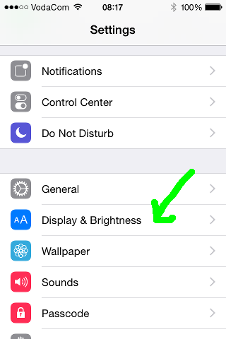
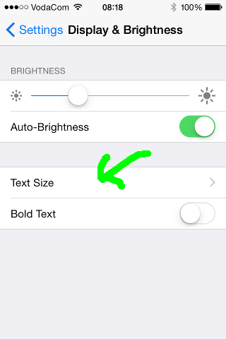
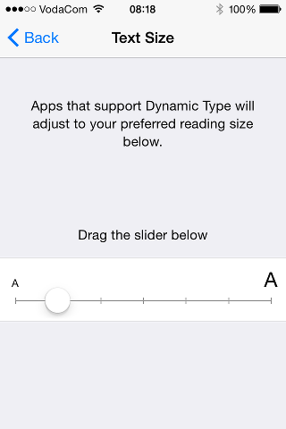

| rTracker supports iOS 7's Dynamic
Type, which is managed through your device's System Settings. |
|
| Select Display & Brightness |
 |
| Select Text Size |
 |
| That's it! Adjust to your preference. |  |